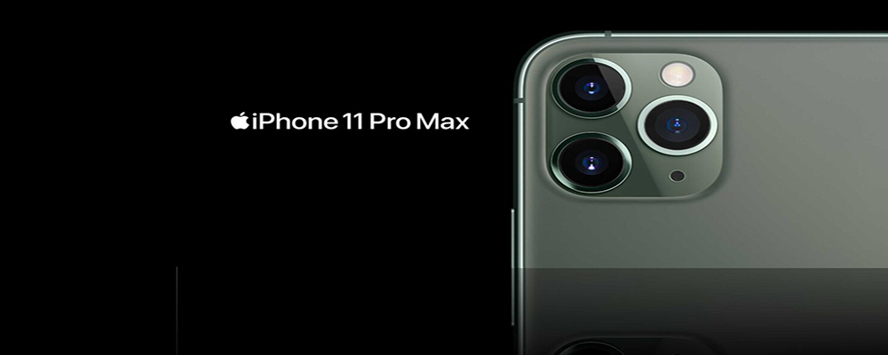
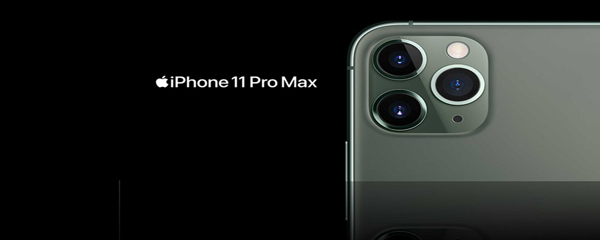

Oppo Find X3 Pro

A Oppo teve um de nossos carros-chefe favoritos em 2020 com o Find X2 Pro - e esperamos um seguimento em 2021. O lançamento é esperado por volta do primeiro trimestre do segundo trimestre, tem uma tela de 6,7 polegadas e é alimentado por um Snapdragon Qualcomm 888, com aumentos para a câmera. Um par de câmeras de 50 megapixels na parte traseira para grande e ultra-amplo pode ser compatível com um zoom de 13 MP e uma câmera macro de 3 MP.
 +244 945 324 234
+244 945 324 234